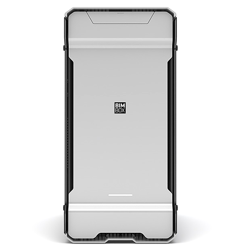
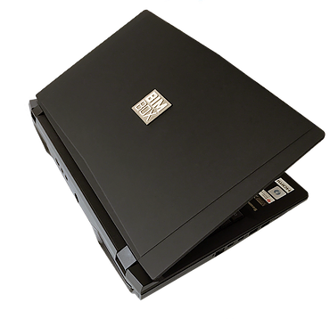

This section sets the minimum expectations for computer hardware used to create, review, and manage project information. Ensuring teams have suitable hardware helps models, documents, and coordination workflows run reliably without performance-related disruption.
| BIM Use + Owner | Hardware | Image | Specification |
|---|---|---|---|
| Design Authoring BIM Manager |
The Stryker |  |
CPU: 9900K Overclocked 4.9-5.3Ghz SSD: 512GB 970 Pro NVMe SSD RAM: 32GB DDR4 Max Speed GPU: 2070 8GB Nvidia RTX |
| Model Access Managers |
The Stryker M-Series |  |
CPU: 9900K Boost to 5.0Ghz SSD: 512GB 970 Pro NVMe SSD RAM: 32GB DDR4 Max Speed GPU: 2070 8GB Nvidia RTX |
| Site Viewing Construction Foreman |
iPad Pro | Wi‑Fi + Cellular 128GB iPad Pro with UAG Case |
Inadequate hardware can lead to slow model performance, file corruption, and delays in coordination and verification. Clear hardware expectations help teams work efficiently, reduce technical risk, and ensure information is produced and reviewed in line with the project’s information management requirements.